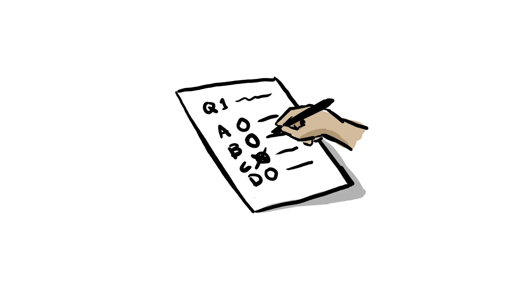

Teaching & Training
We provide hands-on courses on how to convert generic conceptual problems into rigorous, scientific, unbiased quantitative frameworks – from the conceptual and formal design and generation of the data sets, to the choice of the mathematical/statistical tools and interpretation and communication of the analyses and results. The courses can be adapted to a range of backgrounds, proficiency levels, and availability of time. Although they have a common core and several offshoots that can be combined and blended, our curriculum is centered around two flaghips courses, and additional shorter, simpler courses to get professionals and teams up to speed on some basics.

- From the Math to the Masses (a.k.a. Scientific & Quantitative Thinking) – 8-24 classroom hours (single day to few weeks distribution):
Our first flagship course. From the Math to the Masses uses an approach based on real-world problems to teach and demonstrate the process of developing a vague idea into a concrete, scientific, statistically-accurate research project. It shows how we can use statistical models (including Machine Learning/Artificial Intelligence) to formalize and solve open-ended problems, but how natural intelligence is still irreplaceable in this process. It is the broadest and most complex of the course topics, also the most flexible and adaptable to different contexts. It can be taught as an intensive short course, or over a longer time period. Its audience can range from less technical professionals – who will gain insight into how to think scientifically and formulate real world problems as data-driven, quantifiable, algorithmic tasks – all the way to very technical personnel that will benefit from acquiring a critical and scientific view of the tools of the trade. The most important skill any professional will learn in this course is the importance of the interaction between humans and technology to better solve problems in their organization.

- Putting the Intelligence into the Artificial (a.k.a. AI, Machine Learning, Big Data Algorithms, Mathematical Modeling & Statistical Inference) – 8-24 classroom hours (single day to few weeks distribution)
The second flagship course is independent of most concepts of the first one, it goes deeper into the bases of Statistical Inference and Mathematical Modeling, which underpin all Data Science, Machine Learning, and more generally any kind of analysis that uses data – it is rooted in formal defintions while maintaining an intuitive presentation. It will also use real-world problems to work through the process of assembling all parts of a mathematical model (be it linear, nonlinear, regression, classification, machine learning, differential equations, or anything else), expanding the deterministic model structure into a statistical model, and using it in the inverse problem of identifying unknown features and mechanisms from data generated by the system. Depending on the audience and goals of the organization, the level of detail and specialization can be tuned to the level of mathematical and coding proficiency, going from a higher level modeling approach, to a from-scratch implementation of advanced models.
